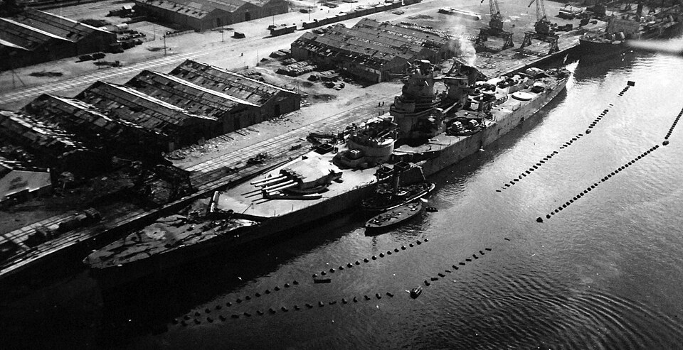

Jean Bart (1940)
Acorazado de Francia, perteneciente a la clase Richelieu. Evacuado incompleto a Casablanca en 1940, utilizó su artillería disponible contra las fuerzas de la operación Torch en 1942.

Diseño y función
Jean Bart (1940) pertenecía a la clase Richelieu. Combate artillero de flota y presencia naval. Sus prestaciones se detallan en la tabla técnica, con las fechas o condiciones disponibles en la referencia.
Operaciones y trayectoria
Evacuado incompleto a Casablanca en 1940, utilizó su artillería disponible contra las fuerzas de la operación Torch en 1942. Su terminación y puesta en servicio formal tuvieron lugar después de la guerra.
Destino final y conservación
Participó en la crisis de Suez de 1956 y terminó su carrera como unidad de reserva antes del desguace en 1970.